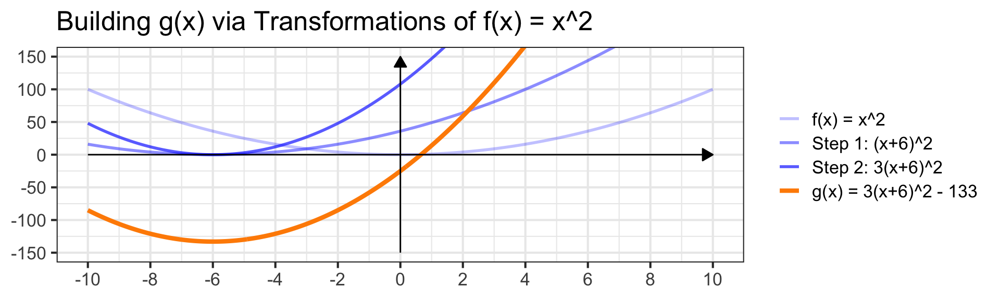
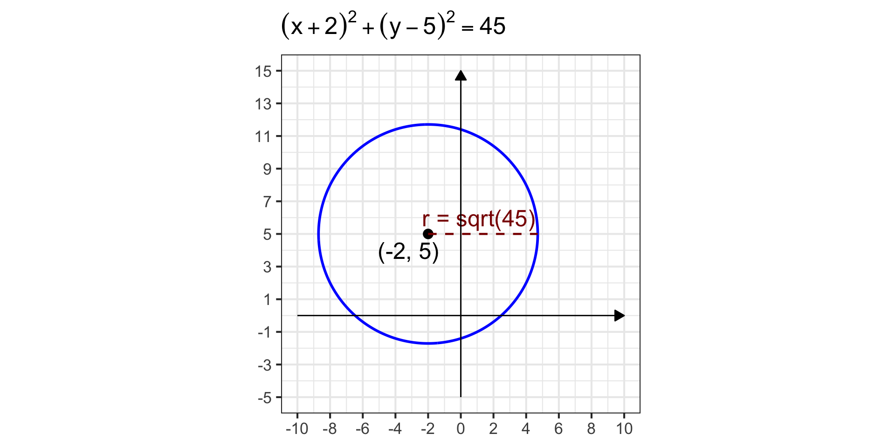
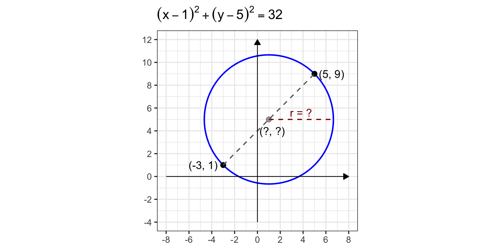

MAT 142: Quadratic Functions and Equations (Part II)
June 4, 2026
Reminders
At our last meeting, we covered quadratic equations and functions:
- Solving quadratic equations by factoring.
- Solving quadratic equations using the quadratic formula.
- Concavity, vertex, roots, end behavior, and graphing parabolas.
Try the following warm-up problems.
Problem 1: Find the vertex and roots of \(f\left(x\right) = 3x^2 - 5x - 2\), and use them to sketch a graph. Does the concavity match what you’d expect from the leading coefficient?
Problem 2: Describe how the graphs of each of the functions below can be obtained via transformations of the “book function” \(b\left(x\right) = x^2\). Then expand each function into standard form \(ax^2 + bx + c\). Can you still easily tell the structure of the graph from the standard form?
\(\left(a\right)~g\left(x\right) = 2\left(x - 3\right)^2 + 7\)
\(\left(b\right)~h\left(x\right) = -\left(x + 5\right)^2 - 1\)
Note: Problem 2 previews today’s main technique. We’ll be attempting to obtain this convenient “vertex form” from the standard form.
Objectives
Today we develop the third and final method for solving quadratic equations, and connect it to the transformations framework.
After today’s class meeting, you should be able to:
- Use completing the square to solve a quadratic equation.
- Rewrite a quadratic function in vertex form \(a\left(x - h\right)^2 + k\) by completing the square.
- Identify the vertex \(\left(h, k\right)\) directly from vertex form and describe the graph as a transformation of \(f\left(x\right) = x^2\).
- Apply completing the square to find the center and radius of a circle from its general equation.
- Use the distance and midpoint formulas to find the equation of a circle from its diameter endpoints.
Method III: Completing the Square
Key Idea: A perfect square trinomial has the form \(x^2 + bx + \left(\frac{b}{2}\right)^2\) because it can be factored into \(\displaystyle{\left(x + \frac{b}{2}\right)^2}\).
To solve \(ax^2 + bx + c = 0\) by completing the square:
- Get \(0\) on one side.
- Factor \(a\) out of the variable terms: \(\displaystyle{a\left(x^2 + \frac{b}{a}x\right) + c = 0}\).
- Add and subtract \(\displaystyle{\left(\frac{b}{2a}\right)^2}\) inside the parentheses, to obtain \(\displaystyle{a\left(x^2 + \frac{b}{a}x + \left(\frac{b}{2a}\right)^2 - \left(\frac{b}{2a}\right)^2\right) + c = 0}\).
- Extract the subtracted term (multiplying by \(a\)), leaving a perfect square inside and resulting in \(\displaystyle{a\left(x^2 + \frac{b}{a}x + \left(\frac{b}{2a}\right)^2\right) - \frac{b^2}{4a} + c = 0}\).
- Factor the perfect square trinomial to obtain \(\displaystyle{a\left(x + \frac{b}{2a}\right)^2 - \frac{b^2}{4a} + c = 0}\).
- Isolate \(x\), eventually taking square roots of both sides and remembering that a “\(\pm\)” results from this operation.
Completing the Square I
Example 1: Use completing the square to solve \(x^2 - 8x - 5 = 0\).
Solution. Since \(a = 1\), we don’t need to factor out a leading coefficient.
\[\begin{align} x^2 - 8x - 5 &= 0 \end{align}\]
\[\begin{align} \text{Ensure 0 is on one side}\\ \end{align}\]
Completing the Square I
Example 1: Use completing the square to solve \(x^2 - 8x - 5 = 0\).
Solution. Since \(a = 1\), we don’t need to factor out a leading coefficient.
\[\begin{align} x^2 - 8x - 5 &= 0\\ \implies \left(x^2 - 8x\right) - 5 &= 0 \end{align}\]
\[\begin{align} &\text{Ensure 0 is on one side}\\ &\text{Group variable terms together} \end{align}\]
Completing the Square I
Example 1: Use completing the square to solve \(x^2 - 8x - 5 = 0\).
Solution. Since \(a = 1\), we don’t need to factor out a leading coefficient.
\[\begin{align} x^2 - 8x - 5 &= 0\\ \implies \left(x^2 - 8x\right) - 5 &= 0\\ \stackrel{\left(\frac{-8}{2}\right)^2 = 16}{\implies} \left(x^2 - 8x + 16 - 16\right) - 5 &= 0 \end{align}\]
\[\begin{align} &\text{Ensure 0 is on one side}\\ &\text{Group variable terms together}\\ &\text{Add and subtract } \left(\frac{b}{2}\right)^2 \text{ inside the parentheses} \end{align}\]
Completing the Square I
Example 1: Use completing the square to solve \(x^2 - 8x - 5 = 0\).
Solution. Since \(a = 1\), we don’t need to factor out a leading coefficient.
\[\begin{align} x^2 - 8x - 5 &= 0\\ \implies \left(x^2 - 8x\right) - 5 &= 0\\ \stackrel{\left(\frac{-8}{2}\right)^2 = 16}{\implies} \left(x^2 - 8x + 16 - 16\right) - 5 &= 0\\ \implies \left(x^2 - 8x + 16\right) - 16 - 5 &= 0 \end{align}\]
\[\begin{align} &\text{Ensure 0 is on one side}\\ &\text{Group variable terms together}\\ &\text{Add and subtract } \left(\frac{b}{2}\right)^2 \text{ inside the parentheses}\\ &\text{Carefully move the } -\left(\frac{b}{2}\right)^2 \text{ outside the parentheses} \end{align}\]
Completing the Square I
Example 1: Use completing the square to solve \(x^2 - 8x - 5 = 0\).
Solution. Since \(a = 1\), we don’t need to factor out a leading coefficient.
\[\begin{align} x^2 - 8x - 5 &= 0\\ \implies \left(x^2 - 8x\right) - 5 &= 0\\ \stackrel{\left(\frac{-8}{2}\right)^2 = 16}{\implies} \left(x^2 - 8x + 16 - 16\right) - 5 &= 0\\ \implies \left(x^2 - 8x + 16\right) - 16 - 5 &= 0\\ \implies \left(x - 4\right)^2 - 21 &= 0 \end{align}\]
\[\begin{align} &\text{Ensure 0 is on one side}\\ &\text{Group variable terms together}\\ &\text{Add and subtract } \left(\frac{b}{2}\right)^2 \text{ inside the parentheses}\\ &\text{Carefully move the } -\left(\frac{b}{2}\right)^2 \text{ outside the parentheses}\\ &\text{Factor the trinomial in the parentheses into a perfect square} \end{align}\]
Completing the Square I
Example 1: Use completing the square to solve \(x^2 - 8x - 5 = 0\).
Solution. Since \(a = 1\), we don’t need to factor out a leading coefficient.
\[\begin{align} x^2 - 8x - 5 &= 0\\ \implies \left(x^2 - 8x\right) - 5 &= 0\\ \stackrel{\left(\frac{-8}{2}\right)^2 = 16}{\implies} \left(x^2 - 8x + 16 - 16\right) - 5 &= 0\\ \implies \left(x^2 - 8x + 16\right) - 16 - 5 &= 0\\ \implies \left(x - 4\right)^2 - 21 &= 0\\ \implies \left(x - 4\right)^2 &= 21 \end{align}\]
\[\begin{align} &\text{Ensure 0 is on one side}\\ &\text{Group variable terms together}\\ &\text{Add and subtract } \left(\frac{b}{2}\right)^2 \text{ inside the parentheses}\\ &\text{Carefully move the } -\left(\frac{b}{2}\right)^2 \text{ outside the parentheses}\\ &\text{Factor the trinomial in the parentheses into a perfect square}\\ &\text{Use algebra to isolate the binomial being squared} \end{align}\]
Completing the Square I
Example 1: Use completing the square to solve \(x^2 - 8x - 5 = 0\).
Solution. Since \(a = 1\), we don’t need to factor out a leading coefficient.
\[\begin{align} x^2 - 8x - 5 &= 0\\ \implies \left(x^2 - 8x\right) - 5 &= 0\\ \stackrel{\left(\frac{-8}{2}\right)^2 = 16}{\implies} \left(x^2 - 8x + 16 - 16\right) - 5 &= 0\\ \implies \left(x^2 - 8x + 16\right) - 16 - 5 &= 0\\ \implies \left(x - 4\right)^2 - 21 &= 0\\ \implies \left(x - 4\right)^2 &= 21\\ \implies x - 4 &= \pm\sqrt{21} \end{align}\]
\[\begin{align} &\text{Ensure 0 is on one side}\\ &\text{Group variable terms together}\\ &\text{Add and subtract } \left(\frac{b}{2}\right)^2 \text{ inside the parentheses}\\ &\text{Carefully move the } -\left(\frac{b}{2}\right)^2 \text{ outside the parentheses}\\ &\text{Factor the trinomial in the parentheses into a perfect square}\\ &\text{Use algebra to isolate the binomial being squared}\\ &\text{Take the square root of both sides, remembering that you'll need a } \pm \end{align}\]
Completing the Square I
Example 1: Use completing the square to solve \(x^2 - 8x - 5 = 0\).
Solution. Since \(a = 1\), we don’t need to factor out a leading coefficient.
\[\begin{align} x^2 - 8x - 5 &= 0\\ \implies \left(x^2 - 8x\right) - 5 &= 0\\ \stackrel{\left(\frac{-8}{2}\right)^2 = 16}{\implies} \left(x^2 - 8x + 16 - 16\right) - 5 &= 0\\ \implies \left(x^2 - 8x + 16\right) - 16 - 5 &= 0\\ \implies \left(x - 4\right)^2 - 21 &= 0\\ \implies \left(x - 4\right)^2 &= 21\\ \implies x - 4 &= \pm\sqrt{21}\\ \implies x &= \boxed{~4 \pm \sqrt{21}~} \end{align}\]
\[\begin{align} &\text{Ensure 0 is on one side}\\ &\text{Group variable terms together}\\ &\text{Add and subtract } \left(\frac{b}{2}\right)^2 \text{ inside the parentheses}\\ &\text{Carefully move the } -\left(\frac{b}{2}\right)^2 \text{ outside the parentheses}\\ &\text{Factor the trinomial in the parentheses into a perfect square}\\ &\text{Use algebra to isolate the binomial being squared}\\ &\text{Take the square root of both sides, remembering that you'll need a } \pm\\ &\text{Isolate the variable to find the solutions} \end{align}\]
Completing the Square II
Problem: Use completing the square to solve \(3x^2 + 5 = x^2 - 12x\).
Solution.
\[\begin{align} 3x^2 + 5 &= x^2 - 12x \end{align}\]
\[\begin{align} \end{align}\]
Completing the Square II
Problem: Use completing the square to solve \(3x^2 + 5 = x^2 - 12x\).
Solution.
\[\begin{align} 3x^2 + 5 &= x^2 - 12x\\ \implies 2x^2 + 12x + 5 &= 0 \end{align}\]
\[\begin{align} &\\ \text{Get 0 on one side} \end{align}\]
Completing the Square II
Problem: Use completing the square to solve \(3x^2 + 5 = x^2 - 12x\).
Solution.
\[\begin{align} 3x^2 + 5 &= x^2 - 12x\\ \implies 2x^2 + 12x + 5 &= 0\\ \implies 2\left(x^2 + 6x\right) + 5 &= 0 \end{align}\]
\[\begin{align} &\\ \text{Get 0 on one side}\\ \text{Factor "a" out of the two variable terms} \end{align}\]
Completing the Square II
Problem: Use completing the square to solve \(3x^2 + 5 = x^2 - 12x\).
Solution.
\[\begin{align} 3x^2 + 5 &= x^2 - 12x\\ \implies 2x^2 + 12x + 5 &= 0\\ \implies 2\left(x^2 + 6x\right) + 5 &= 0\\ \implies 2\left(x^2 + 6x + 9 - 9\right) + 5 &= 0 \end{align}\]
\[\begin{align} &\\ &\text{Get 0 on one side}\\ &\text{Factor "a" out of the two variable terms}\\ &\text{Inside parentheses, add and subtract } \left(\frac{6}{2}\right)^2 \end{align}\]
Completing the Square II
Problem: Use completing the square to solve \(3x^2 + 5 = x^2 - 12x\).
Solution.
\[\begin{align} 3x^2 + 5 &= x^2 - 12x\\ \implies 2x^2 + 12x + 5 &= 0\\ \implies 2\left(x^2 + 6x\right) + 5 &= 0\\ \implies 2\left(x^2 + 6x + 9 - 9\right) + 5 &= 0\\ \implies 2\left(x^2 + 6x + 9\right) - 2\left(9\right) + 5 &= 0 \end{align}\]
\[\begin{align} &\\ &\text{Get 0 on one side}\\ &\text{Factor "a" out of the two variable terms}\\ &\text{Inside parentheses, add and subtract } \left(\frac{6}{2}\right)^2\\ &\text{Carefully move the -9 outside, multiplying by the factored out "a"} \end{align}\]
Completing the Square II
Problem: Use completing the square to solve \(3x^2 + 5 = x^2 - 12x\).
Solution.
\[\begin{align} 3x^2 + 5 &= x^2 - 12x\\ \implies 2x^2 + 12x + 5 &= 0\\ \implies 2\left(x^2 + 6x\right) + 5 &= 0\\ \implies 2\left(x^2 + 6x + 9 - 9\right) + 5 &= 0\\ \implies 2\left(x^2 + 6x + 9\right) - 2\left(9\right) + 5 &= 0\\ \implies 2\left(x + 3\right)^2 - 13 &= 0 \end{align}\]
\[\begin{align} &\\ &\text{Get 0 on one side}\\ &\text{Factor "a" out of the two variable terms}\\ &\text{Inside parentheses, add and subtract } \left(\frac{6}{2}\right)^2\\ &\text{Carefully move the -9 outside, multiplying by the factored out "a"}\\ &\text{Factor the grouped terms into a perfect square} \end{align}\]
Completing the Square II
Problem: Use completing the square to solve \(3x^2 + 5 = x^2 - 12x\).
Solution.
\[\begin{align} 3x^2 + 5 &= x^2 - 12x\\ \implies 2x^2 + 12x + 5 &= 0\\ \implies 2\left(x^2 + 6x\right) + 5 &= 0\\ \implies 2\left(x^2 + 6x + 9 - 9\right) + 5 &= 0\\ \implies 2\left(x^2 + 6x + 9\right) - 2\left(9\right) + 5 &= 0\\ \implies 2\left(x + 3\right)^2 - 13 &= 0\\ \implies \left(x + 3\right)^2 &= \frac{13}{2} \end{align}\]
\[\begin{align} &\\ &\text{Get 0 on one side}\\ &\text{Factor "a" out of the two variable terms}\\ &\text{Inside parentheses, add and subtract } \left(\frac{6}{2}\right)^2\\ &\text{Carefully move the -9 outside, multiplying by the factored out "a"}\\ &\text{Factor the grouped terms into a perfect square}\\ &\text{Isolate the binomial being squared} \end{align}\]
Completing the Square II
Problem: Use completing the square to solve \(3x^2 + 5 = x^2 - 12x\).
Solution.
\[\begin{align} 3x^2 + 5 &= x^2 - 12x\\ \implies 2x^2 + 12x + 5 &= 0\\ \implies 2\left(x^2 + 6x\right) + 5 &= 0\\ \implies 2\left(x^2 + 6x + 9 - 9\right) + 5 &= 0\\ \implies 2\left(x^2 + 6x + 9\right) - 2\left(9\right) + 5 &= 0\\ \implies 2\left(x + 3\right)^2 - 13 &= 0\\ \implies \left(x + 3\right)^2 &= \frac{13}{2}\\ \implies x + 3 &= \pm \sqrt{\frac{13}{2}} \end{align}\]
\[\begin{align} &\\ &\text{Get 0 on one side}\\ &\text{Factor "a" out of the two variable terms}\\ &\text{Inside parentheses, add and subtract } \left(\frac{6}{2}\right)^2\\ &\text{Carefully move the -9 outside, multiplying by the factored out "a"}\\ &\text{Factor the grouped terms into a perfect square}\\ &\text{Isolate the binomial being squared}\\ &\\ &\text{Take the square root, remembering } \pm \end{align}\]
Completing the Square II
Problem: Use completing the square to solve \(3x^2 + 5 = x^2 - 12x\).
Solution.
\[\begin{align} 3x^2 + 5 &= x^2 - 12x\\ \implies 2x^2 + 12x + 5 &= 0\\ \implies 2\left(x^2 + 6x\right) + 5 &= 0\\ \implies 2\left(x^2 + 6x + 9 - 9\right) + 5 &= 0\\ \implies 2\left(x^2 + 6x + 9\right) - 2\left(9\right) + 5 &= 0\\ \implies 2\left(x + 3\right)^2 - 13 &= 0\\ \implies \left(x + 3\right)^2 &= \frac{13}{2}\\ \implies x + 3 &= \pm \sqrt{\frac{13}{2}}\\ \implies x &= -3 \pm \sqrt{\frac{13}{2}} \end{align}\]
\[\begin{align} &\\ &\text{Get 0 on one side}\\ &\text{Factor "a" out of the two variable terms}\\ &\text{Inside parentheses, add and subtract } \left(\frac{6}{2}\right)^2\\ &\text{Carefully move the -9 outside, multiplying by the factored out "a"}\\ &\text{Factor the grouped terms into a perfect square}\\ &\text{Isolate the binomial being squared}\\ &\\ &\text{Take the square root, remembering } \pm\\ &\\ &\text{Isolate } x \text{ to solve} \end{align}\]
There are two solutions \(\boxed{~\displaystyle{-3 \pm \sqrt{\frac{13}{2}}}~}\).
Completing the Square Practice
Try It! 1: Use completing the square to solve \(x^2 + 6x + 2 = 0\).
Try It! 2: Use completing the square to solve \(-3x^2 - 12x + 3 = 0\).
Vertex Form
The same process that solves quadratic equations gives us something even more useful: vertex form.
Definition (Vertex Form): A quadratic function written as
\[f\left(x\right) = a\left(x - h\right)^2 + k\]
is in vertex form. The vertex is at \(\left(h, k\right)\), and the graph is a transformation of \(f\left(x\right) = x^2\) which has been
- moved right by \(h\) units,
- stretched/compressed by a factor of \(a\) (and flipped over the \(x\)-axis if \(a < 0\)), and
- shifted up by \(k\) units.
This is exactly the transformations framework we encountered earlier this semester.
Now we have a systematic method for getting any quadratic into this form – complete the square.
Obtaining Vertex Form
Example 3: Complete the square to rewrite \(g\left(x\right) = 3x^2 + 36x - 25\) in vertex form. Describe the graph of \(g\) as a transformation of \(f\left(x\right) = x^2\) and identify the vertex.
Solution.
\[\begin{align} g\left(x\right) &= 3x^2 + 36x - 25 \end{align}\]
Obtaining Vertex Form
Example 3: Complete the square to rewrite \(g\left(x\right) = 3x^2 + 36x - 25\) in vertex form. Describe the graph of \(g\) as a transformation of \(f\left(x\right) = x^2\) and identify the vertex.
Solution.
\[\begin{align} g\left(x\right) &= 3x^2 + 36x - 25\\ &= 3\left(x^2 + 12x\right) - 25 \end{align}\]
Obtaining Vertex Form
Example 3: Complete the square to rewrite \(g\left(x\right) = 3x^2 + 36x - 25\) in vertex form. Describe the graph of \(g\) as a transformation of \(f\left(x\right) = x^2\) and identify the vertex.
Solution.
\[\begin{align} g\left(x\right) &= 3x^2 + 36x - 25\\ &= 3\left(x^2 + 12x\right) - 25\\ &= 3\left(x^2 + 12x + 36 - 36\right) - 25 \end{align}\]
Obtaining Vertex Form
Example 3: Complete the square to rewrite \(g\left(x\right) = 3x^2 + 36x - 25\) in vertex form. Describe the graph of \(g\) as a transformation of \(f\left(x\right) = x^2\) and identify the vertex.
Solution.
\[\begin{align} g\left(x\right) &= 3x^2 + 36x - 25\\ &= 3\left(x^2 + 12x\right) - 25\\ &= 3\left(x^2 + 12x + 36 - 36\right) - 25\\ &= 3\left(x^2 + 12x + 36\right) - 108 - 25 \end{align}\]
Obtaining Vertex Form
Example 3: Complete the square to rewrite \(g\left(x\right) = 3x^2 + 36x - 25\) in vertex form. Describe the graph of \(g\) as a transformation of \(f\left(x\right) = x^2\) and identify the vertex.
Solution.
\[\begin{align} g\left(x\right) &= 3x^2 + 36x - 25\\ &= 3\left(x^2 + 12x\right) - 25\\ &= 3\left(x^2 + 12x + 36 - 36\right) - 25\\ &= 3\left(x^2 + 12x + 36\right) - 108 - 25\\ &= 3\left(x + 6\right)^2 - 133 \end{align}\]
Obtaining Vertex Form
Example 3: Complete the square to rewrite \(g\left(x\right) = 3x^2 + 36x - 25\) in vertex form. Describe the graph of \(g\) as a transformation of \(f\left(x\right) = x^2\) and identify the vertex.
Solution.
\[\begin{align} g\left(x\right) &= 3x^2 + 36x - 25\\ &= 3\left(x^2 + 12x\right) - 25\\ &= 3\left(x^2 + 12x + 36 - 36\right) - 25\\ &= 3\left(x^2 + 12x + 36\right) - 108 - 25\\ &= \boxed{~3\left(x + 6\right)^2 - 133~}\\ &= \boxed{~3\left(x - \left(-6\right)\right)^2 - 133~} \end{align}\]
The graph \(g\left(x\right)\) is moved to the left by \(6\) and down \(133\) from the “book function” \(f\left(x\right) = x^2\). The vertex of the “book function” was at \(\left(0, 0\right)\), so the vertex of \(g\left(x\right)\) is at \(\left(-6, -133\right)\).
Graphing from Vertex Form
Example 4: Describe the graph of \(g\left(x\right) = 3\left(x + 6\right)^2 - 133\) as a transformation of \(f\left(x\right) = x^2\).
Solution. The transformation sequence applied to the “book function” \(f\left(x\right) = x^2\):
- Shift left by \(6\) units: \(f\left(x + 6\right) = \left(x + 6\right)^2\)
- Stretch vertically by factor \(3\) to obtain \(3\left(x + 6\right)^2\)
- Shift down by \(133\) units and arrive at \(g\left(x\right) = 3\left(x + 6\right)^2 - 133\)

Vertex Form Practice
Try It! 3: Complete the square to rewrite \(j\left(x\right) = 2x^2 - 12x + 7\) in vertex form \(a\left(x - h\right)^2 + k\).
- Identify the vertex.
- Describe the graph of \(j\) as a sequence of transformations applied to \(f\left(x\right) = x^2\).
- Does the parabola open upward or downward?
- Draw the graph of \(j\left(x\right)\)
Circles
Completing the square has a beautiful application beyond quadratics: finding the center and radius of a circle from its general equation.
Definition (Center-Radius Form): The equation of a circle with center \(\left(x_0, y_0\right)\) and radius \(r\) is
\[\left(x - x_0\right)^2 + \left(y - y_0\right)^2 = r^2\]
Example 5: The circle with equation \(\left(x - 4\right)^2 + \left(y + 2\right)^2 = 49\) has center at the point \(\left(4, -2\right)\) and radius \(7\).
When a circle’s equation is given in general form (\(x^2 + bx + y^2 + cy = d\)), we complete the square twice — once for the \(x\) terms and once for the \(y\) terms — to recover the center-radius form.
Finding the Center and Radius
Example 6: Find the center and radius of the circle given by \(x^2 + 4x + y^2 - 10y = 16\).
Solution. We’ll complete the square for \(x\) and then complete the square for \(y\).
\[\begin{align} x^2 + 4x + y^2 - 10y &= 16 \end{align}\]
Finding the Center and Radius
Example 6: Find the center and radius of the circle given by \(x^2 + 4x + y^2 - 10y = 16\).
Solution. We’ll complete the square for \(x\) and then complete the square for \(y\).
\[\begin{align} x^2 + 4x + y^2 - 10y &= 16\\ \implies \left(x^2 + 4x\right) + y^2 - 10y &= 16 \end{align}\]
Finding the Center and Radius
Example 6: Find the center and radius of the circle given by \(x^2 + 4x + y^2 - 10y = 16\).
Solution. We’ll complete the square for \(x\) and then complete the square for \(y\).
\[\begin{align} x^2 + 4x + y^2 - 10y &= 16\\ \implies \left(x^2 + 4x\right) + y^2 - 10y &= 16\\ \implies \left(x^2 + 4x + 4 - 4\right) + y^2 - 10y &= 16 \end{align}\]
Finding the Center and Radius
Example 6: Find the center and radius of the circle given by \(x^2 + 4x + y^2 - 10y = 16\).
Solution. We’ll complete the square for \(x\) and then complete the square for \(y\).
\[\begin{align} x^2 + 4x + y^2 - 10y &= 16\\ \implies \left(x^2 + 4x\right) + y^2 - 10y &= 16\\ \implies \left(x^2 + 4x + 4 - 4\right) + y^2 - 10y &= 16\\ \implies \left(x^2 + 4x + 4\right) - 4 + y^2 - 10y &= 16 \end{align}\]
Finding the Center and Radius
Example 6: Find the center and radius of the circle given by \(x^2 + 4x + y^2 - 10y = 16\).
Solution. We’ll complete the square for \(x\) and then complete the square for \(y\).
\[\begin{align} x^2 + 4x + y^2 - 10y &= 16\\ \implies \left(x^2 + 4x\right) + y^2 - 10y &= 16\\ \implies \left(x^2 + 4x + 4 - 4\right) + y^2 - 10y &= 16\\ \implies \left(x^2 + 4x + 4\right) - 4 + y^2 - 10y &= 16\\ \implies \left(x + 2\right)^2 - 4 + y^2 - 10y &= 16 \end{align}\]
Finding the Center and Radius
Example 6: Find the center and radius of the circle given by \(x^2 + 4x + y^2 - 10y = 16\).
Solution. We’ll complete the square for \(x\) and then complete the square for \(y\).
\[\begin{align} x^2 + 4x + y^2 - 10y &= 16\\ \implies \left(x^2 + 4x\right) + y^2 - 10y &= 16\\ \implies \left(x^2 + 4x + 4 - 4\right) + y^2 - 10y &= 16\\ \implies \left(x^2 + 4x + 4\right) - 4 + y^2 - 10y &= 16\\ \implies \left(x + 2\right)^2 - 4 + y^2 - 10y &= 16\\ \implies \left(x + 2\right)^2 + y^2 - 10y &= 20 \end{align}\]
Finding the Center and Radius
Example 6: Find the center and radius of the circle given by \(x^2 + 4x + y^2 - 10y = 16\).
Solution. We’ll complete the square for \(x\) and then complete the square for \(y\).
\[\begin{align} x^2 + 4x + y^2 - 10y &= 16\\ \implies \left(x^2 + 4x\right) + y^2 - 10y &= 16\\ \implies \left(x^2 + 4x + 4 - 4\right) + y^2 - 10y &= 16\\ \implies \left(x^2 + 4x + 4\right) - 4 + y^2 - 10y &= 16\\ \implies \left(x + 2\right)^2 - 4 + y^2 - 10y &= 16\\ \implies \left(x + 2\right)^2 + y^2 - 10y &= 20 \end{align}\]
\[\begin{align} \left(x + 2\right)^2 + y^2 - 10y &= 20 \end{align}\]
Finding the Center and Radius
Example 6: Find the center and radius of the circle given by \(x^2 + 4x + y^2 - 10y = 16\).
Solution. We’ll complete the square for \(x\) and then complete the square for \(y\).
\[\begin{align} x^2 + 4x + y^2 - 10y &= 16\\ \implies \left(x^2 + 4x\right) + y^2 - 10y &= 16\\ \implies \left(x^2 + 4x + 4 - 4\right) + y^2 - 10y &= 16\\ \implies \left(x^2 + 4x + 4\right) - 4 + y^2 - 10y &= 16\\ \implies \left(x + 2\right)^2 - 4 + y^2 - 10y &= 16\\ \implies \left(x + 2\right)^2 + y^2 - 10y &= 20 \end{align}\]
\[\begin{align} \left(x + 2\right)^2 + y^2 - 10y &= 20\\ \implies \left(x + 2\right)^2 + \left(y^2 - 10y\right) &= 20 \end{align}\]
Finding the Center and Radius
Example 6: Find the center and radius of the circle given by \(x^2 + 4x + y^2 - 10y = 16\).
Solution. We’ll complete the square for \(x\) and then complete the square for \(y\).
\[\begin{align} x^2 + 4x + y^2 - 10y &= 16\\ \implies \left(x^2 + 4x\right) + y^2 - 10y &= 16\\ \implies \left(x^2 + 4x + 4 - 4\right) + y^2 - 10y &= 16\\ \implies \left(x^2 + 4x + 4\right) - 4 + y^2 - 10y &= 16\\ \implies \left(x + 2\right)^2 - 4 + y^2 - 10y &= 16\\ \implies \left(x + 2\right)^2 + y^2 - 10y &= 20 \end{align}\]
\[\begin{align} \left(x + 2\right)^2 + y^2 - 10y &= 20\\ \implies \left(x + 2\right)^2 + \left(y^2 - 10y\right) &= 20\\ \implies \left(x + 2\right)^2 + \left(y^2 -10y + 25 - 25\right) &= 20 \end{align}\]
Finding the Center and Radius
Example 6: Find the center and radius of the circle given by \(x^2 + 4x + y^2 - 10y = 16\).
Solution. We’ll complete the square for \(x\) and then complete the square for \(y\).
\[\begin{align} x^2 + 4x + y^2 - 10y &= 16\\ \implies \left(x^2 + 4x\right) + y^2 - 10y &= 16\\ \implies \left(x^2 + 4x + 4 - 4\right) + y^2 - 10y &= 16\\ \implies \left(x^2 + 4x + 4\right) - 4 + y^2 - 10y &= 16\\ \implies \left(x + 2\right)^2 - 4 + y^2 - 10y &= 16\\ \implies \left(x + 2\right)^2 + y^2 - 10y &= 20 \end{align}\]
\[\begin{align} \left(x + 2\right)^2 + y^2 - 10y &= 20\\ \implies \left(x + 2\right)^2 + \left(y^2 - 10y\right) &= 20\\ \implies \left(x + 2\right)^2 + \left(y^2 -10y + 25 - 25\right) &= 20\\ \implies \left(x + 2\right)^2 + \left(y^2 - 10y + 25\right) - 25 &= 20 \end{align}\]
Finding the Center and Radius
Example 6: Find the center and radius of the circle given by \(x^2 + 4x + y^2 - 10y = 16\).
Solution. We’ll complete the square for \(x\) and then complete the square for \(y\).
\[\begin{align} x^2 + 4x + y^2 - 10y &= 16\\ \implies \left(x^2 + 4x\right) + y^2 - 10y &= 16\\ \implies \left(x^2 + 4x + 4 - 4\right) + y^2 - 10y &= 16\\ \implies \left(x^2 + 4x + 4\right) - 4 + y^2 - 10y &= 16\\ \implies \left(x + 2\right)^2 - 4 + y^2 - 10y &= 16\\ \implies \left(x + 2\right)^2 + y^2 - 10y &= 20 \end{align}\]
\[\begin{align} \left(x + 2\right)^2 + y^2 - 10y &= 20\\ \implies \left(x + 2\right)^2 + \left(y^2 - 10y\right) &= 20\\ \implies \left(x + 2\right)^2 + \left(y^2 -10y + 25 - 25\right) &= 20\\ \implies \left(x + 2\right)^2 + \left(y^2 - 10y + 25\right) - 25 &= 20\\ \implies \left(x + 2\right)^2 + \left(y - 5\right)^2 - 25 &= 20 \end{align}\]
Finding the Center and Radius
Example 6: Find the center and radius of the circle given by \(x^2 + 4x + y^2 - 10y = 16\).
Solution. We’ll complete the square for \(x\) and then complete the square for \(y\).
\[\begin{align} x^2 + 4x + y^2 - 10y &= 16\\ \implies \left(x^2 + 4x\right) + y^2 - 10y &= 16\\ \implies \left(x^2 + 4x + 4 - 4\right) + y^2 - 10y &= 16\\ \implies \left(x^2 + 4x + 4\right) - 4 + y^2 - 10y &= 16\\ \implies \left(x + 2\right)^2 - 4 + y^2 - 10y &= 16\\ \implies \left(x + 2\right)^2 + y^2 - 10y &= 20 \end{align}\]
\[\begin{align} \left(x + 2\right)^2 + y^2 - 10y &= 20\\ \implies \left(x + 2\right)^2 + \left(y^2 - 10y\right) &= 20\\ \implies \left(x + 2\right)^2 + \left(y^2 -10y + 25 - 25\right) &= 20\\ \implies \left(x + 2\right)^2 + \left(y^2 - 10y + 25\right) - 25 &= 20\\ \implies \left(x + 2\right)^2 + \left(y - 5\right)^2 - 25 &= 20\\ \implies \left(x + 2\right)^2 + \left(y - 5\right)^2 &= 45 \end{align}\]
The equation of the circle in its center-radius form is \(\left(x - \left(-2\right)\right)^2 + \left(y - 5\right)^2 = 45\).
The center of the circle is at the point \(\left(-2, 5\right)\) and the radius is \(\sqrt{45}\).

Circles Practice
Try It! 4: Find the center and radius of the circle given by \(x^2 - 6x + y^2 + 8y = 11\).
Reminder: Complete the square separately for the \(x\) terms and the \(y\) terms.
Distance and Midpoint Formulas
We have two more tools that come in handy when working with circles and geometry more broadly.
Definition (Distance Formula): The distance between points \(\left(x_1, y_1\right)\) and \(\left(x_2, y_2\right)\) is:
\[d = \sqrt{\left(x_2 - x_1\right)^2 + \left(y_2 - y_1\right)^2}\]
Definition (Midpoint Formula): The midpoint between \(\left(x_1, y_1\right)\) and \(\left(x_2, y_2\right)\) is:
\[\left(\frac{x_1 + x_2}{2},\; \frac{y_1 + y_2}{2}\right)\]
The distance formula comes from the Pythagorean theorem and the midpoint formula uses the idea of coordinatewise averaging.
Circle From Two Points
Example 7: Find the equation of the circle with \(\left(-3, 1\right)\) and \(\left(5, 9\right)\) at opposite ends of a diameter.
Solution. The center is the midpoint of the diameter.
\[\begin{align} \text{Center} &= \left(\frac{-3 + 5}{2},\; \frac{1 + 9}{2}\right) = \left(1, 5\right) \end{align}\]
The radius is the distance from the center to either endpoint.
\[\begin{align} r &= \sqrt{\left(\left(5 - 1\right)^2 + \left(9 - 5\right)^2\right)} = \sqrt{32} \end{align}\]
The equation of the circle is \(\boxed{~\left(x - 1\right)^2 + \left(y - 5\right)^2 = 32~}\).

Circles Practice
Try It! 5: Find the equation of the circle with \(\left(2, -1\right)\) and \(\left(8, 7\right)\) at opposite ends of a diameter.
Reminder: Use the midpoint formula for the center, then the distance formula for the radius.
Exit Ticket Task
Navigate to our MAT142 Exit Ticket Form, answer the questions, and complete the task below.
Note. Today’s discussion is listed as 11. Quadratic Functions and Equations (Part II)

Task: Complete the square to rewrite \(f\left(x\right) = x^2 - 6x + 2\) in vertex form. State the vertex and describe the graph as a transformation of \(f\left(x\right) = x^2\).
Summary and Next Time…
- Completing the square converts \(ax^2 + bx + c\) into \(a\left(x - h\right)^2 + k\) by adding and subtracting \(\left(\frac{b}{2a}\right)^2\) and factoring.
- The resulting form \(f\left(x\right) = a\left(x - h\right)^2 + k\) is called vertex form
- The vertex is \(\left(h, k\right)\) and the graph is a direct transformation of \(g\left(x\right) = x^2\).
- For circles, completing the square twice recovers center-radius form \(\left(x - x_0\right)^2 + \left(y - y_0\right)^2 = r^2\).
- The distance formula gives the length between two points; the midpoint formula gives the point halfway between them.
- Given the endpoints of a diameter of a circle, use midpoint for the center and distance for the radius.
- With quadratics complete, we move into polynomial functions. These are a natural generalization beyond linear and quadratic functions. You’ll see that many of the ideas from quadratics (roots, end behavior, leading coefficient, end behavior, etc.) carry forward in a richer form.
Polynomial Functions
Complete Homework 8 on MyOpenMath